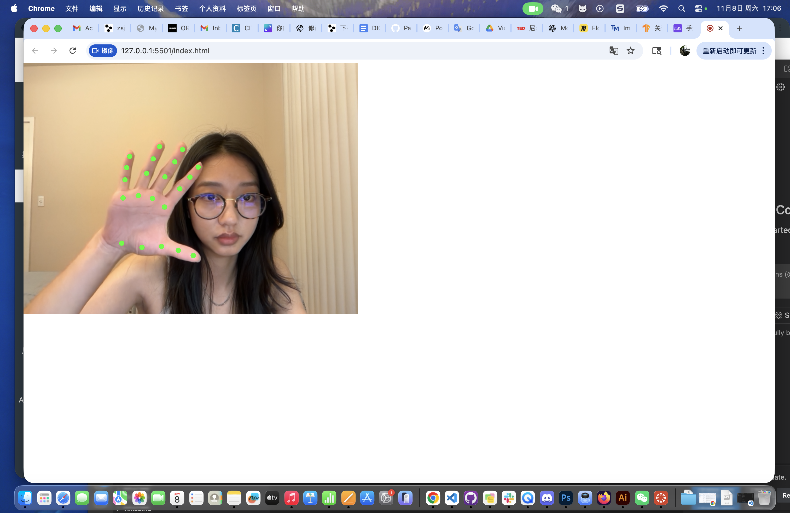
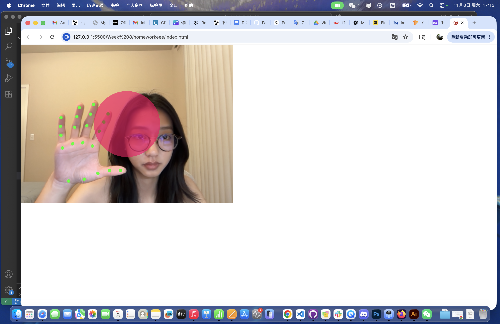
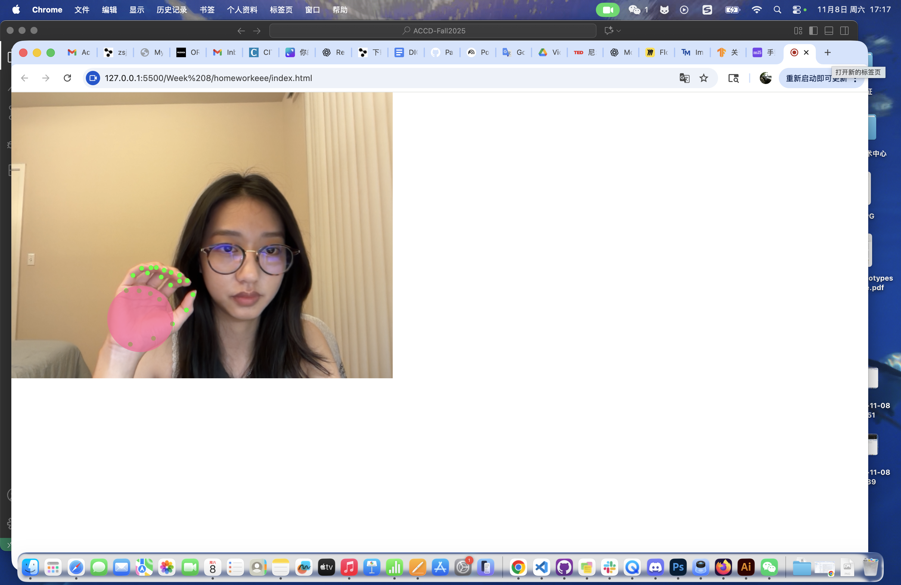
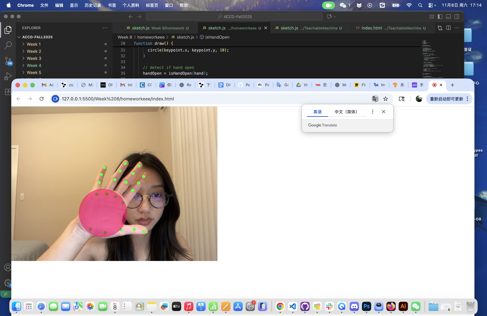
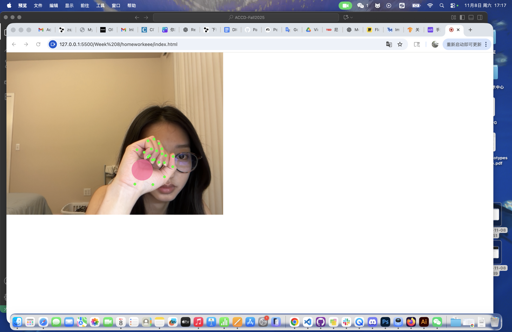

My Process
1. At first, I referenced the ml5.js handPose sketch in my Visual Studio Code, and I want to extend based on it.

2. Secondly, I updated the code so when I open my hand, a geometry (circle) appears. I did it by extended my code with a oepn-hand detection.

3. Thirdly, I want the geometry to follow my hand and my palm, so it will move and changes size depends on my palm position.

4. Fourthly, I made it for both of my hands. So I added palmX and palmY per hand.

5. When I open my hands, it will detect my palms and will show two circles based on my action.
